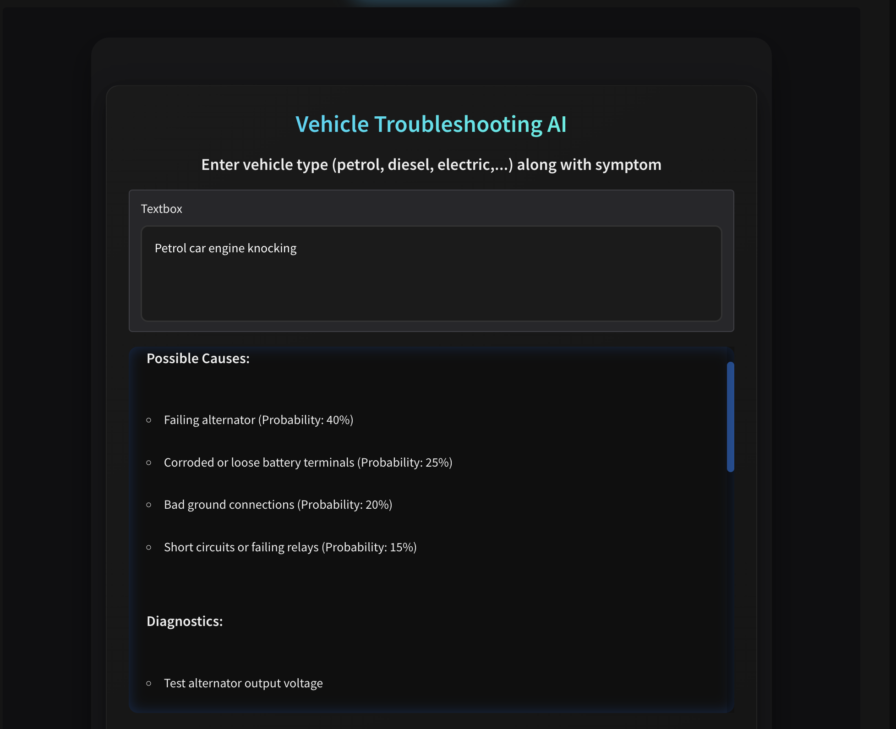
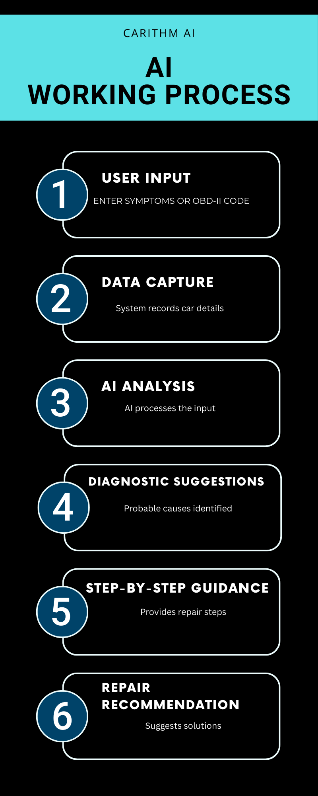
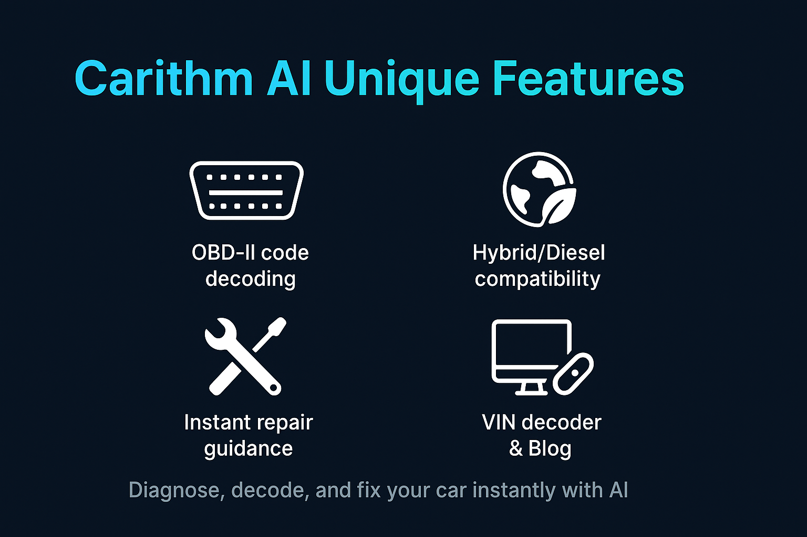

About Carithm AI
Your Free AI Car Diagnostics & Predictive Maintenance Assistant
Carithm AI is a free AI car diagnostic tool that helps drivers and mechanics troubleshoot vehicle issues quickly and accurately. Using natural language input or OBD-II codes, Carithm AI delivers precise diagnostics, probable causes, and step-by-step repair guidance for petrol, diesel, and hybrid vehicles.
🔹 What Carithm AI Does
Carithm AI acts as a virtual AI car mechanic, analyzing symptoms or OBD-II codes like P0300, P0171, P0420, and many others. It provides:
- Probable causes and component-specific failure analysis
- Step-by-step diagnostic checks
- Repair guidance and approximate cost estimates
Learn more and use the full AI diagnostics on the Carithm AI main page.

🔹 How It Works
Simply enter your car’s symptom or OBD-II code, and Carithm AI instantly analyzes it using advanced AI algorithms. All diagnostics are available instantly on desktop, tablet, or mobile without downloads or logins.

🔹 Predictive Maintenance AI
Carithm now includes Predictive Maintenance AI that predicts when vehicle servicing and parts replacement are required. Using historical data, AI analysis, and your driving patterns, it estimates:
- Upcoming servicing schedules
- Potential wear and component replacement timelines
- Cost-effective preventive maintenance suggestions
Learn more and try our Carithm Predictive Maintenance AI.
🔹 Why Carithm AI Is Trusted & Free
Carithm AI is completely free, requires no signup, and leverages verified repair knowledge, a comprehensive OBD-II database, and cutting-edge AI models. Your data is never sold or stored, and the AI works reliably across petrol, diesel, and hybrid vehicles. Use the full AI diagnostics on the main Carithm AI page anytime.
🔹 Key Features
- Full OBD-II code decoding for all standard P0xxx and P1xxx codes
- Compatible with petrol, diesel, and hybrid vehicles
- Step-by-step AI-guided diagnostics and repair guidance
- Predictive maintenance insights for upcoming servicing needs
- Works instantly on desktop, tablet, and mobile with no login
- Integration withCar Blog
- Supports natural language input for engine troubleshooting

FAQ
Is Carithm AI free?
Yes, Carithm AI is fully free, with no signup required, offering instant AI guidance for engine, fuel system, and electrical problems. Access it anytime on the Carithm AI main page.
Can I use OBD-II codes?
Absolutely! All standard OBD-II codes including P0300, P0171, P0420 are supported. Carithm AI provides detailed explanations, probable causes, and step-by-step repair instructions. Learn more on the main AI page.
Which vehicle types are supported?
Carithm AI works with petrol, diesel, and hybrid vehicles, providing accurate diagnostics and repair guidance.
Is my data safe?
Your data is never sold or stored. All diagnostic requests are processed securely and anonymously.
Does it work on mobile and desktop?
Yes, Carithm AI works instantly on mobile, tablet, and desktop with no downloads or logins required.
How fast is the AI diagnosis?
Carithm AI delivers results in seconds, giving immediate guidance for troubleshooting and repairs.